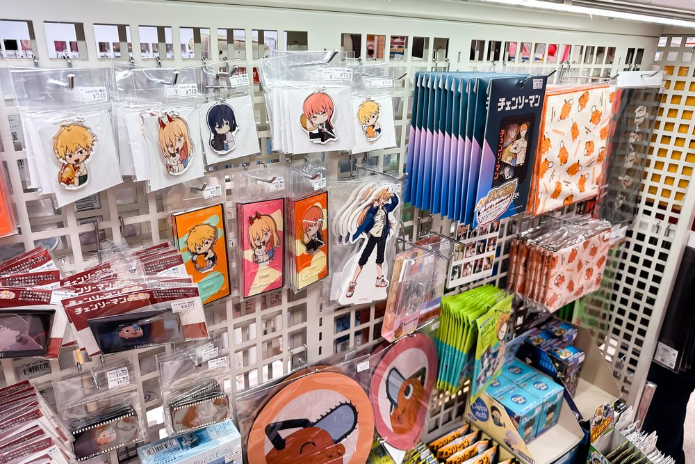
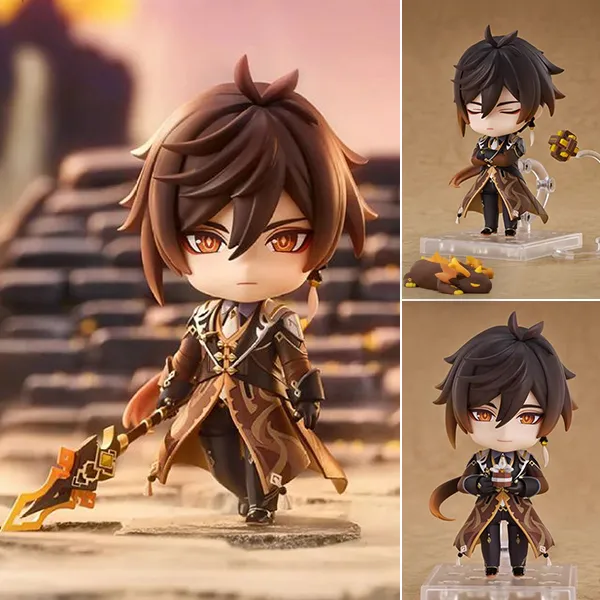
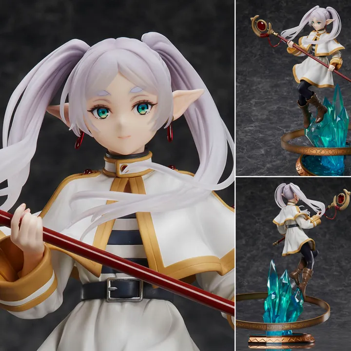
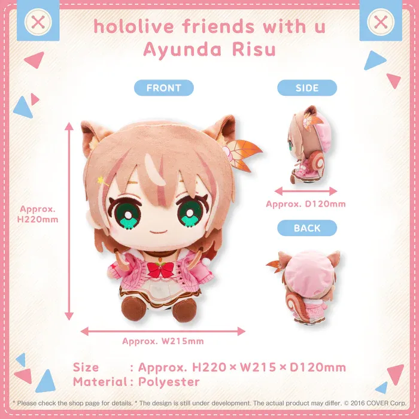
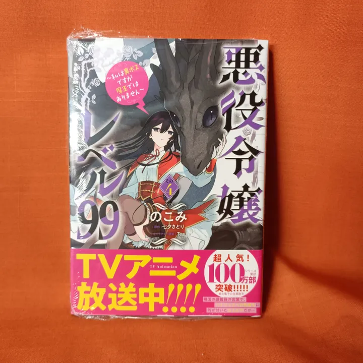

 Merchandise anime adalah berbagai barang yang dibuat berdasarkan karakter, tema, atau elemen dari anime. Barang-barang ini biasanya dikoleksi oleh para penggemar untuk menunjukkan kecintaan mereka terhadap anime tertentu. Merchendise biasanya dilakukan oleh para penggemar anime demi kesukaan mereka. Biasanya Harga merchendise ini sangat mahal terutama official langsung dari negeri sakura, Jepang. Selain mahal karena biaya ongkos kirim, hal ini karena juga termasuk hak cipta terhadap produk yang sudah dibuat. Banyak prosedur yang harus dilalui untuk dapat dijual belikan kepada konsumen. Mulai dari persetujuan pencipta, pembuatan hak cipta, pihak percetakan dan lain sebagainya. Benda merchendise ini dibeli para penggemar anime sebagai kesukaannya dan pembuktian dukungan kepada pembuat karya tersebut. Dengan adanya web HoyWi, akan memberikan saran merchandise yang wajib para wibu miliki. Tidak jarang banyak toko yang membuat merchendise anime sembarangan tanpa izin, hal ini membuat harga merchendise menjadi lebih murah. Akan tetapi, hal ini membuat rugi pihak pembuat karya, karena tidak adanya apresiasi terhadap author dan para staff.
Saat ini di Indonesia sudah banyak tempat yang memudahkan kita dalam membeli merchandise official. salah satu tempatnya adalah Kyou Hobby Shop yang sudah menyediakan berbagai macam merchendise mulai dari action figure, gantungan akrilik, fashion anime, photocard, earphone dan lain sebagainya. Bila barang yang kita inginkan tidak tersedia, Kyou Hobby sudah membuka layanan pre-order yang tentu saja memerlukan banyak waktu untuk mendapatkannya.
 Nendroid merupakan seri utama figur berukuran 10 cm yang dilengkapi alat yang membantu figur berdiri. Figur ini dijual dengan lengan dan kaki alternatif yang memungkinkan untuk pose yang berbeda-beda1. Nendoroid pada dasarnya adalah action figure yang dirilis oleh perusahaan Good Smile Company. Figur ini diangkat dari karakter anime, manga atau video game sebagai model. Nendoroid adalah versi SD – Super Deformed dari karakter-karakter populer (terutama maskot dan karakter anime) yang dihadirkan dalam bentuk chibi dengan kepala yang lebih besar dari ukuran badannya sendiri). Kebanyakan Nendoroid dibuat berdasarkan karakter dari seri anime, manga, dan video gim. Desain Nendoroid memiliki ciri khas tersendiri, yaitu bentuknya badannya mungil dan kepalanya besar alias chibi. Selain itu, wajah dan bagian badan dari Nendoroid bisa dilepas dan diganti dengan bentuk wajah dan bagian badan yang lain. Hal ini dibuat demi bisa mengubah pose dan ekspresi yang berbeda-beda. Karakter yang dijual pertama kali sebagai Nendoroid adalah Nendoroid Neco Arc dari gim Tsukihime yang dirilis pada Wonder Festival atau WonFes 2006. Pencipta asli seri pertama kali ini adalah Tsuyoshi Oda dikenal juga sebagai Oda-P. Namun, sekarang seri ini dikerjakan oleh sejumlah orang yang bekerja dengan nama kolektif Nendoron. Penggunaan nama kolektif ini, sebab terlalu banyak orang yang bekerja secara bersamaan pada satu Nendoroid.
 Scaled Figure merupakan figure karakter dari kartun Jepang yang biasanya dibuat dengan bahan resin. Besar dari figure ini adalah berskala 1:7 dibandingkan dengan ukuran karakter aslinya. Scaled Figure ini mempunyai harga yang cukup mahal. Hal ini tergantung pada detail dari figure itu sendiri, semakin figure itu terlihat seperti karakter aslinya, maka harga yang ditawarkan tentu akan sangat mahal sampai bisa menembus 10 juta rupiah ke atas. Ciri dari scaled figure terdapat dua, yaitu action figure adalah figurine yang bisa melakukan sebuah gerakan. Sehingga orang bisa membuat pose sesuai keinginan dengan menggerakkan bagian kepala, tangan, dan kaki. Yang menjadi perbedaan selanjutnya adalah ia mempunyai aksesoris tambahan yang menyertai dan bisa dibongkar pasang seperti contohnya senjata. Sedangkan figurine sama bentuknya, namun pemilik mainan yang satu ini tidak bisa membuat pose tertentu karena bagian-bagiannya yang tidak bisa digerakkan. Jadi hanya mempunyai satu pose dalam bentuk aslinya. Untuk membuatnya berdiri tegak, umumnya figurine mempunyai alas permanen di bagian bawahnya. Sehingga, mainan jenis figurine hanya bisa di pajang tanpa bisa dimainkan.
 Plush sejenis dengan lebih sering disebut doll atau boneka, tapi untuk beda satu ini disebut dengan “plushie” untuk menyebut boneka. Secara harfiah, plushie sendiri memiliki arti sebuah boneka yang dibuat dari kain dan diisi dengan busa. Nah biasanya untuk membuat boneka ini sendiri menggunakan bahan seperti velboa, nylex, yelvo, hingga rasfur. Model yang digunakan untuk membuat boneka ini sendiri bisa sangat beragam mulai dari hewan, buah-buahan, hingga berbagai karakter lucu lainnya. Boneka sejenis ini juga biasanya menjadi teman yang menemanimu tidur dan selalu ada di tempat tidurmu lho. Ini karena biasanya plushie memiliki karakteristik yang empuk dan berbahan lembut yang tentu saja sangat nyaman untuk menjadi teman tidurmu. boneka atau mainan yang berbahan lembut dan diberi isian yang empuk sehingga nyaman untuk dipeluk. Selain itu Plushie juga biasanya memiliki bentuk yang lebih variatif, ada yang berbentuk manusia, hewan, hingga karakter film kartun.
 Manga adalah komik atau novel grafik yang dibuat di Jepang atau menggunakan bahasa Jepang, sesuai dengan gaya yang dikembangkan di sana pada akhir abad ke-19. Manga memiliki sejarah awal yang panjang dan kompleks dalam seni Jepang terdahulu. Di Jepang, orang-orang dari segala kelompok usia membaca manga. Manga mencakup karya-karya dalam berbagai genre: diantaranya laga, petualangan, bisnis dan perdagangan, komedi, detektif, drama, sejarah, horor, misteri, romantis, fiksi ilmiah dan fantasi, erotika, olahraga dan permainan, dan cerita seru. Sudah banyak manga yang diterjemahkan ke bahasa lainnya. Sejak tahun 1950-an, manga telah menjadi bagian utama dari industri penerbitan Jepang. Pada tahun 1995, pasar manga di Jepang bernilai ¥586,4 miliar (US$6–7 miliar), dengan penjualan tahunan sekitar 1,9 miliar untuk manga dan majalah manga di Jepang (setara dengan 15 edisi per orang). Manga juga memiliki khalayak penikmat yang cukup signifikan di seluruh dunia. Pada tahun 2008, pasar manga bernilai $175 juta di AS dan Kanada. Manga mencapai angka 38% dalam pasar komik Prancis, yang setara dengan sekitar sepuluh kali lipat dari angka untuk Amerika Serikat. Di Prancis, pasar manga dihargai sekitar €460 juta ($569 juta) pada tahun 2005. Di Eropa dan Timur Tengah, pasar manga bernilai sekitar $250 juta pada tahun 2012. Cerita dalam sebuah manga biasanya dicetak dalam warna hitam dan putih, meskipun ada beberapa manga yang sepenuhnya berwarna (seperti Colorful). Di Jepang, manga biasanya dimuat berseri dalam majalah manga populer—sering kali berisi banyak cerita, dan masing-masing manga dimuat dalam satu bab dan bersambung ke edisi berikutnya. Bab-bab yang dibundel biasanya diterbitkan ulang dalam bentuk volume tankōbon, dan terkadang dalam bentuk buku bersampul tipis. Seorang ilustrator manga (mangaka dalam bahasa Jepang) biasanya bekerja dibantu beberapa asisten di sebuah studio kecil dan berhubungan dengan editor kreatif dari perusahaan penerbit komersial. Jika sebuah seri manga cukup populer, manga itu bisa dijadikan anime setelah ceritanya tamat atau selama masih berlanjut. Terkadang, sebuah manga dibuat berdasarkan dari film laga hidup (live–action) atau film animasi lain.
| No. | Jenis Merchendise | Nama Produk | Harga | Link Pembelian |
| 1. | Nendroid | Nendoroid Zhongli - Genshin Impact | 800k | Zhongli |
| 2. | Scaled Figure | Frieren - MADHOUSE x Design COCO Anime Anniversary Edition Ver. Sousou no Frieren | 3450k | Frieren |
| 3. | Plush | Hololive ID Ayunda Risu Plush hololive friends with u Vol. 7 | 800k | Ayunda Risu |
| 4. | Manga | Kadokawa B's-LOG Comics Manga Akuyaku Reijou Level 99 Vol. 4 - Tanabata Satori | 150k | Akuyaku Reijou Level 99 |
| Web by : |
| Ramanda Tsany P |
| 11220251000043 (5A) |